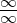
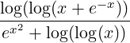

| Up | Next | Prev | PrevTail | Tail |
Author: Neil Langmead
This package was written when the author was a placement student at ZIB Berlin.
This package arises from the PhD thesis of Dominik Gruntz[Gru96], of the ETH Zürich. He developed a new algorithm to compute limits of "exp-log" functions. Many of the examples he gave were unable to be computed by the present LIMITS package in REDUCE, the simplest example being the following, whose limit is obviously 0:
This particular problem arises, because L’Hôpital’s rule for the computation of indefinite forms (such as 0∕0, or

) can only be applied in a CAS a finite number of times, and in REDUCE, this number is 3. Appling L’Hôpital’s rule 7 times to the above problem would have yielded the correct answer 0.The new algorithm solves this particular problem, and enables the computation of many more limit calculations in REDUCE. We first define the domain in which we work, and then give a statement of the main algorithm that is used in this package.
Definition:
Let ℜ[x] be the ring of polynomials in x with real coefficients, and let f be an element in
this ring. The field which is obtained from ℜ[x] by closing it under the operations
f → exp(f) and f → log |f| is called the ℒ-field (or logarithmico-exponential field, or
field of exp-log functions for short).
Hardy proved [Har12] that every ℒ function is ultimately continuous, of constant sign,
monotonic, and tends to ±∞ or to a finite real constant as x → +∞.
Here are some examples of exp-log functions, which the package is able to deal with:
| f(x) | = ex ∗ log(log(x)) | ||
| f(x) | =  | ||
| f(x) | = log(x)log(x) | ||
| f(x) | = ex∗log(x) |
A complete statement of the algorithm now follows: Let f be a log-exp function in x, whose limit we wish to compute as x → x0. The main steps of the algorithm to do this are as follows:
The algorithm to compute the most rapidly varying subset (the mrv set) of a function f is given below:
procedure mrv(f)
% f an exp log function in x
if (not (depend(f,x))) → return ({})
else if f = x → return({x})
else if f = gh → return(max(mrv(g),mrv(h)))
else if f = g + h → return(max(mrv(g),mrv(h)))
else if f = gc and c ∈ C → return(mrv(g))
else if f = log(g) → return(mrv(g))
else if f = eg →
if limx→∞g = ±∞→
return(max({eg}, mrv(g)))
else → return mrv(g)
end
The function max() computes the maximum of the two sets of expressions. Max() compares two elements of its argument sets and returns the set which is in the higher comparability class or the union of both if they have the same order of variation.
For example, we have
| mrv(ex) = {ex} | |||
| mrv(log(log(log(x + x2 + x3)))) = {x} | |||
| mrv(x) = {x} | |||
| mrv(ex + e−x + x2 + xlog(x)) = {ex,e−x} | |||
| mrv(ee−x ) = {e−x} |
For further details, proofs and explanations of the algorithm, please consult Gruntz’ thesis[Gru96].
Consider the following in REDUCE:
More examples can be found in the mrvlimit.tst file.
The package provides a means of tracing the mrv_limit function at its main steps, and is intended to help the user if he encounters problems. Messages are displayed informing the user which Taylor expansion is being computed, all recursive calls are listed, and the value returned by the mrv function is given. This information is displayed when a switch trlimit is on.
Note that, due to the recursiveness of the algorithm there is a lot of output when the trlimit switch is on.
| Up | Next | Prev | PrevTail | Front |